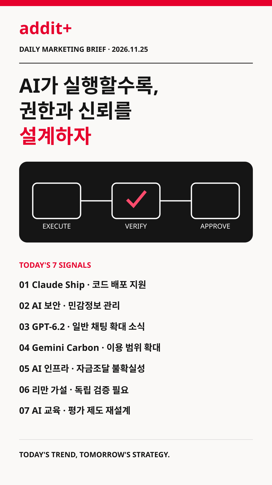

Claude Ship
코드 리뷰와 PR 관리, 승인 지원 기능을 결합한 배포 지원 도구. 연합뉴스 보도 기준.
ADDIT INSIGHT
자동 배포보다 검토·승인 책임을 먼저 정의하세요.
ADDIT DAILY MARKETING BRIEF
AI가 답변을 넘어 실행으로 확장될수록 승인, 보안, 검증 체계가 중요해집니다.

코드 리뷰와 PR 관리, 승인 지원 기능을 결합한 배포 지원 도구. 연합뉴스 보도 기준.
ADDIT INSIGHT
자동 배포보다 검토·승인 책임을 먼저 정의하세요.
보안뉴스는 설정 파일 1,122개에서 민감정보 노출 사례를 보도했습니다.
ADDIT INSIGHT
공개 전 민감정보 검사와 접근권한 점검을 업무 절차에 포함하세요.
제공 원고는 위치에 따른 매장 추천 결과 차이를 다룹니다. 기사 전문 미확인.
ADDIT INSIGHT
지역별 브랜드 노출을 반복 측정하고 공식 사업장 정보를 정비하세요.
AI타임스는 데이원의 최대 50억 달러 규모 미국 IPO 계획 보류를 보도했습니다.
ADDIT INSIGHT
AI 도입 예산에 공급자 변경과 비용 변동 가능성을 반영하세요.
NVIDIA 공식 블로그는 과학 발견을 지원하는 에이전트 기술을 소개합니다.
ADDIT INSIGHT
AI 연구 결과는 출처와 재현성을 함께 확인하세요.
제공 원고 기반 제목 요약 및 원문 링크. 모든 기사 전문을 독립 검증한 것은 아닙니다.
편집자 메모: 리만 가설의 형식 검증 통과 보도는 수학계의 독립 검증 및 정식 인정과 구분합니다. 모델 출시 및 구독 범위는 제공 기사 기준이며 공식 안내를 추가 확인해야 합니다. 대표 비주얼은 설명용 인포그래픽입니다.